This codelab will walk you through how to navigate the Security Innovation smart contract CTF and solve its initial levels. The CTF demonstrates how difficult it is to write secure smart contracts in Solidity and why you should consider using alternate languages to develop contracts in. If you'd like more information on smart contract vulnerabilities, I would recommend visiting https://github.com/sigp/solidity-security-blog or viewing the associated screencast lectures available from class.
What you'll learn
- How to navigate and solve levels in the Security Innovation Blockchain CTF
- How to analyze smart contracts for potential issues such as faulty assumptions on the randomness of random numbers
What you'll need
- A functional wallet address in Metamask
- Knowledge of Solidity and smart contracts
- An account on Security Innovation's Blockchain CTF site https://blockchain-ctf.securityinnovation.com
- Bring up Metamask and ensure you have enabled your course wallet address
- Use the UI to copy your address to the clipboard. This will be needed for receiving ETH from vulnerable contracts that you deploy in order to play the CTF.
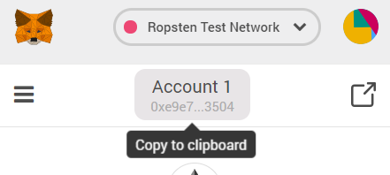
- Visit https://blockchain-ctf.securityinnovation.com/ and connect your Metamask account to it.
- Login

- You should arrive at the Dashboard. The Dashboard lists all of the available levels that you can play. To play a level, click the associated button on the web page. Each button has the amount of ETH required to launch the level. You will be sending your own ETH in your wallet to instantiate a vulnerable contract to hold it. The goal of the CTF is for you to get your ETH back from the vulnerable contract. Scoring is based on how much ETH you still have in CTF levels.
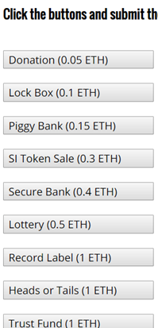
- Confirm the transaction on Metamask.
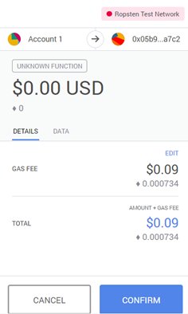
- If no Metamask popup appears, you may need to manually click its icon to access the confirmation screen
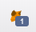
- Wait. Revisit the Dashboard to see your level launched. The UI after launching all levels will look like below with options to play each level indicated with "Play Game!".
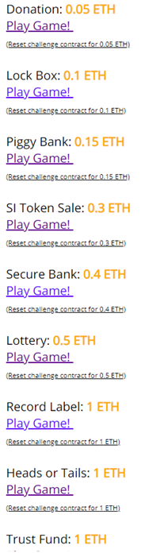
The below is the code for the base contract for the CTF. Its sole role is to ensure that only you can get the ETH you put into the level back. As these contracts are vulnerable, you don't want to lose any of your valuable (or not valuable) ETH by having someone else leverage the vulnerability in your contract. All levels are derived from this base class. It's main purpose is to implement the ctf() modifier. Specifically, the code does the following
- Creates a mapping (
authorizedToPlay) to indicate a collection of addresses - Implements logic in the constructor of the contract to add the player's address (i.e. your wallet address) and the launching contract's address to the mapping (e.g.
authorizedToPlay[_player] = true;) - Implements the logic of the
ctf()modifier using therequire()statement to ensure that only addresses in theauthorizedToPlaymapping can access a function that uses the modifier.
contract CtfFramework {
mapping(address => bool) internal authorizedToPlay;
constructor(address _ctfLauncher, address _player) public {
authorizedToPlay[_ctfLauncher] = true;
authorizedToPlay[_player] = true;
}
modifier ctf() {
require(authorizedToPlay[msg.sender], "Your wallet or contract is not authorized to play this challenge. You must first add this address via the ctf_challenge_add_authorized_sender(...) function.");
_;
}
}Adding addresses to authorizedToPlay
Some levels must be solved by an attack program. For example, in the previous codelabs a contract KillMyContract was used to access the cashOut() function in MyContract. If MyContract was derived from CtfFramework, you would have needed to add the address of the KillMyContract to authorizedToPlay in order to access cashOut()
To allow players to instantiate contracts to attack CTF levels, the CtfFramework also implements a function ctf_challenge_add_authorized_sender() that allows any authorized account to add an address to the authorizedToPlay mapping. You may call this function from MyCrypto to add addresses to the authorizedToPlay mapping.
function ctf_challenge_add_authorized_sender(address _addr) external ctf {
authorizedToPlay[_addr] = true;
}Important note about the CTF
Whenever you get an out-of-gas error, ensure that the address being used to access the CTF level has been authorized.
We will now walkthrough the solution for the first level of the CTF: Donation. If you have not already done so, click on the level to launch it and fund it with ETH from your wallet via Metamask.
Level goal
This level gives you practice working with the mechanics of using wallet software to interact with the contracts in the CTF. It's effectively the "Hello World" of the CTF. As with many early smart contracts and ICOs, this contract is all about collecting ETH from gullible investors. Contract owners would then simply cash-out the contract and disappear. That wouldn't be any of you, though, right? (This is Portland after all!)
Code
The first part of the contract source code is shown below. It imports a library called "SafeMath" because Solidity's built-in math operations are broken and do not check for overflow and underflow of numbers. It has a storage variable called funds that tracks the balance of the contract. It also has a constructor that is payable since you initialize the contract with funds supplied by the player's wallet (i.e. 0.05 ETH)
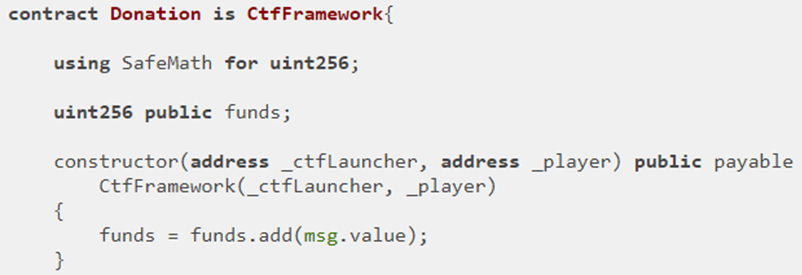
The second half of the contract contains a fallback function that receives payments (if any are sent to it). Note the use of the ctf modifier on the fallback function. Only you and the contract's launcher can add more to the contract. It also contains the sardonically named call withdrawDonationsFromTheSuckersWhoFellForIt() that transfers funds to whomever calls it (e.g. msg.sender). Note that this call is also modified by ctf in order to make sure only you can withdraw money from the contract.
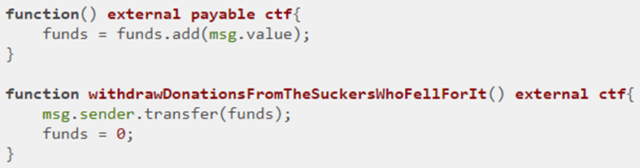
Visit the CTF level and make note of the contract address and ABI and the small clipboard icons to the right of them that allow you to copy their values to the computer's clipboard.
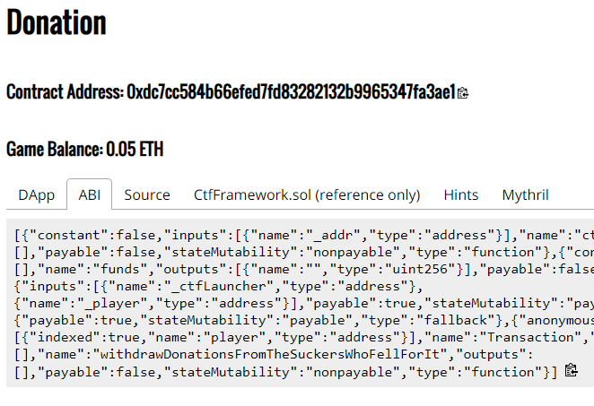
Bring the contract up on MyCrypto to interact with it as done in previous codelabs, ensuring you select Ropsten for the network. Copy the contract address and ABI from the level into the site, then click "Access"
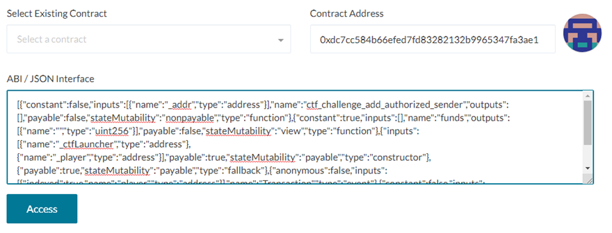
Scroll down and select the withdrawDonationsFromSuckers.. 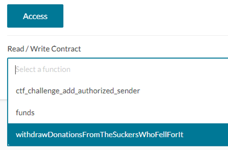
Then, call into contract to retrieve funds using MetaMask to write, generate, and send transaction
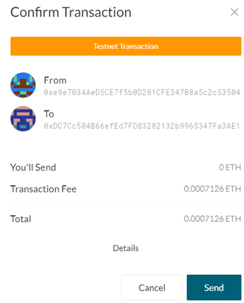
From Metamask, view the status of the transaction to see its success.
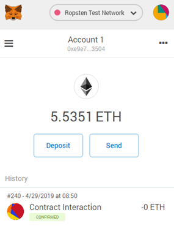
Click on the transaction and then on the link to Etherscan to view the transaction showing the 0.05 ETH being sent back to your wallet as below.
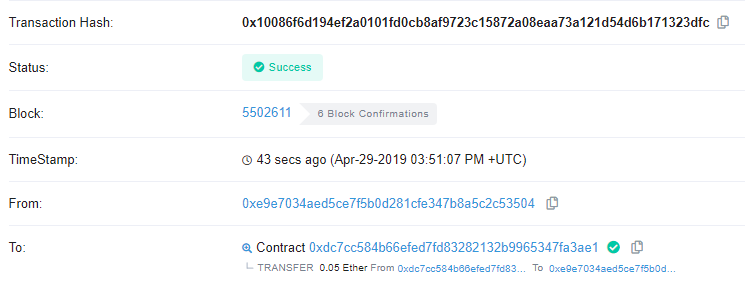
- Take a screenshot of the transaction to include in your lab notebook
Return to the SI CTF Dashboard to verify the level has been completed
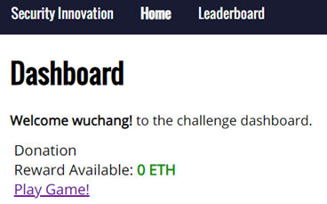
Click on "Play Game!"
- Take a screenshot of the level with a 0 ETH balance to include in your lab notebook.

Important note
For every level you solve in the CTF, you are required to take a screenshot of the transaction on Etherscan that returns your ETH back to your wallet and a screenshot of the level with a 0 ETH balance to include in your lab notebook
(For CS students) Just because of the awful play on words that I could not pass up, we will now solve the level from Remix even though the initial contract was not deployed from the IDE. This allows one to completely avoid using MyCrypto, although it may be less convenient.
To solve the level within Remix, we will need to first copy the level source code into it. Note that to avoid having to include the SafeMath library and the CtfFramework code, we can take a short-cut and just specify the interface of the contract. This has a similar role as .h header files have in C. Remix only needs to know how to format calls into Donation and does not need to know the internal implementation of the contract.
To show this in action, perform the following steps
- Reset Donation to get a new contract address
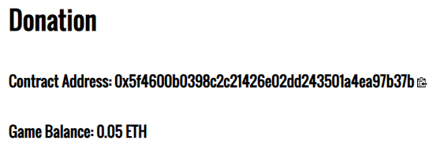
- Compile a modified contract named Donation.sol that specifies the interface to Donation. Since we only need to call the withdraw function, it is the only one that we need to include in the interface.
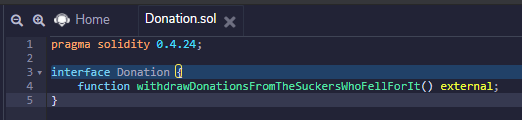
pragma solidity 0.4.24;
interface Donation {
function withdrawDonationsFromTheSuckersWhoFellForIt() external;
}- Click on the Solidity compiler tab and compile the contract interface.
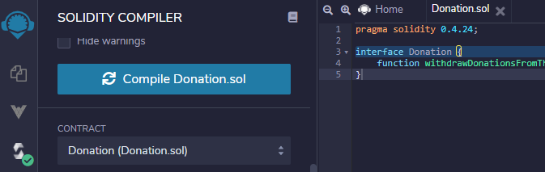
- Click on the Deploy & run tab and select "Injected Web3" as the environment. Ensure that the IDE is connected via your Ropsten address.
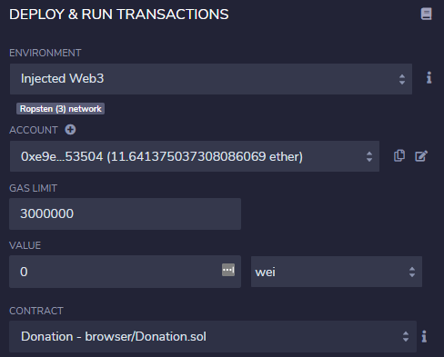
- Instead of clicking "Deploy", fill out the "At Address" field with the address of the Donation contract above. Then click "At Address". This will instantiate within Remix, the interface to interact with the Donation contract stored at that address on the blockchain. The ABI for doing so has been compiled from the source code you supplied previously (versus the one from the CTF site that you used for MyCrypto).
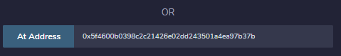
- The contract then appears under "Deployed Contracts", allowing you to interact with it as done previously for contracts compiled and deployed from within Remix

- Click on the
withdrawDonationsFromTheSuckers...()call to solve the level.
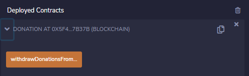
One of the most difficult things to do on a public blockchain is to keep a secret. If your contract requires any degree of secrecy, you must understand what is exposed in the execution of your contracts.
Level goal
This level has you exploit a Lockbox contract that is locked by a code that is assumed to be hidden. By poking around the blockchain, you can find this hidden code, unlock the contract, and get your ETH back.
Code
The code for the level is below:
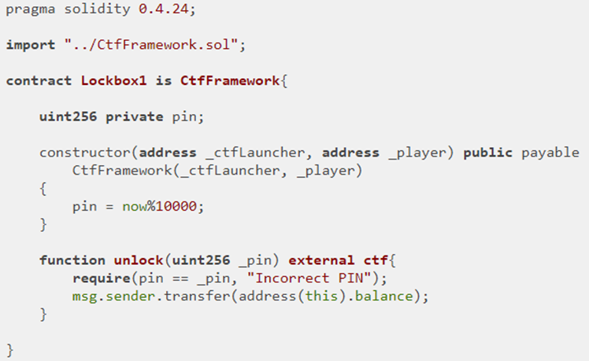
In it, notice that the constructor initializes an unsigned integer pin as now % 10000 (e.g. now mod 10000) to generate a 4-digit pin. pin is declared to be private. While the private keyword ensures only internal functions can directly access the variable and that there is no getter that is implemented which allows a transaction to access it, the variable itself is stored in the contract's state which is accessible to any machine running an Ethereum full node!
Moreover, the code uses the "now" keyword. "now" is an alias for block.timestamp which indicates the timestamp of the block that it was recorded in. This timestamp consists of the number of seconds since the epoch (Jan 1, 1970). While it is not obvious what this timestamp's value is from the contract, all transactions are recorded on the blockchain, including the one that created the Lockbox contract. One can simply use Etherscan to find the block that the contract was created in, look up the timestamp of that block, and determine the pin by performing the modulus. Doing so allows us to call unlock() in order to obtain the balance of the contract.
Copy the contract's address from the CTF 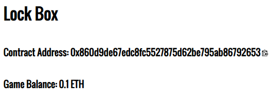
Use Ethscan to find the transaction that created the contract

Click on the transaction that created the contract in the bottom right to view its details
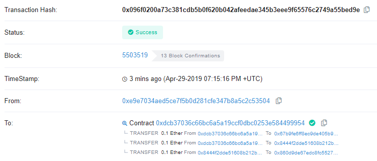
Pull the text from the timestamp field (e.g. Apr-29-2019...) and find its value in seconds from the epoch (Jan 1, 1970). Convert its unix timestamp to seconds since epoch. On Linux, you can use the date command. You may also use this site.
mashimaro[09:52][~]% date -d "Apr-29-2019 07:15:16 PM +UTC" +%s
1556565316Use the modulus of the timestamp and 10000 (e.g. 5316) as the pin code.
Go to MyCrypto, copy the contract ABI and address to access the contract, then invoke the unlock() call with your calculated pin code.
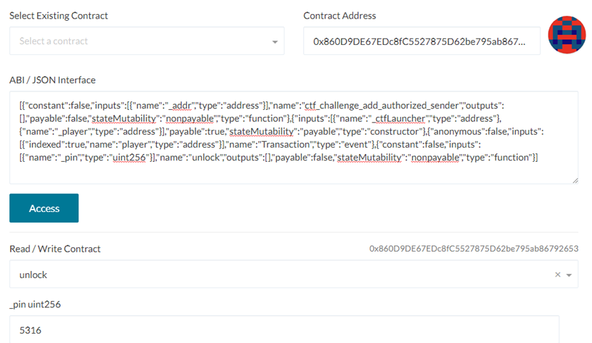
- Take a screenshot of the Etherscan transaction that transfers the ETH back to your wallet for your lab notebook
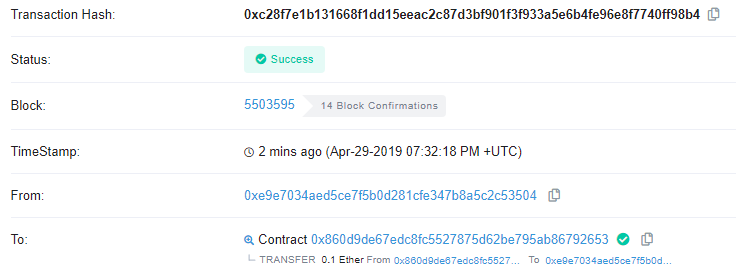
- Show the level screenshot with a 0 ETH balance for your lab notebook
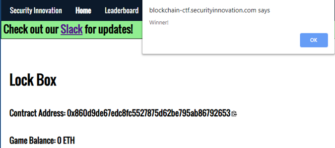
You have exploited your first "smart" contract. Some people do not like the term, but because it seems to be lowering the bar on what "smart" is considered to be, the term makes me feel a little smarter than I used to. :)